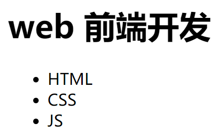
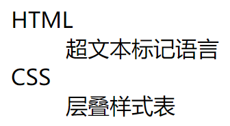
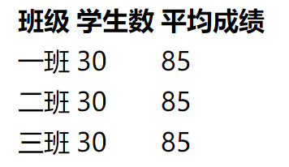
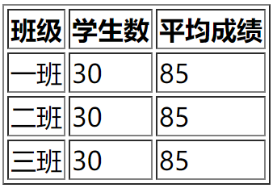
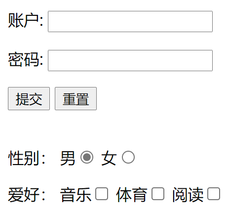
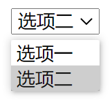

HTML学习笔记
网站和网页
网站是网页的集合，一个网站中的网页通过超链接的方式被组织在一起。
关于主页：
对于把所有网页放在同一个文件夹下的网站，通常主页是进入网站看到的第一个网页，文件名为 index.html。
对于 Hexo 这类网站，则是每个网页对应一个主页，如本文的 url 为 https://xkz0777.github.io/2021/07/22/qd2/，而浏览器解析的 html 文件则是该 url 对应的 index.html 文件，具体到本文为 https://xkz0777.github.io/2021/07/22/qd2/index.html，其实在浏览器地址栏中输入这两个 url 的效果是一样的。
html 文件需要交给浏览器解析、渲染以后才能得到平时看到的网页。
HTML 概述
HTML，即 HyperText MarkUp Language（超文本标记语言）的缩写，不区分大小写。文件名后缀为 .html 或 .htm（两种命名没有差别，但大多数 HTML 文件大多后缀是前者）。
标签、元素、属性
HTML 由标签+属性构成，标签由尖括号包围，通常成对出现，如
<title>Hello world</title>
<img src="logo.jpg" alt="站标" <!--其中src，alt为属性-->标签可以嵌套，不同层级之间应该注意缩进。
属性是一个名值对，其中值需要用引号包裹，有些属性可能没有值。
一个标签可以有多个属性，属性先后顺序无关，属性和标签名、其他属性之间应该用空格隔开。
HTML 文件结构
当前 HTML5 标准下的文件结构大致如下：
<!DOCTYPE html>
<html lang="en">
<head>
<meta charset="UTF-8">
<meta http-equiv="X-UA-Compatible" content="IE=edge">
<meta name="viewport" content="width=device-width, initial-scale=1.0">
<title>Document</title>
</head>
<body>
</body>
</html>其中首行（Document Type）便于浏览器识别该文件是 HTML 类型的文件。
lang 属性是针对搜索引擎的，en 表示英文，zh 则为中文。
<mata> 标签表示元数据，描述一个 HTML 网页的属性，例如作者、日期和时间、网页描述、关键词、页面刷新等，用户不可见。charset 属性表示字符集编码方式，通常都使用 UTF-8 编码。应该注意的是，源文件保存时的编码方式应该与 charset 属性中的编码方式一致，否则会出现乱码问题。
<head> 标签中包含规定文档元数据 meta，文档的标题 title，引用的文档样式 css 和脚本 Javascript 等，对用户都不可见。
<title> 标签是网页标签页里显示的内容，同时也会作为搜索结果的超链接上的文字显示。会被搜索引擎赋予很高的权重，应该让这些文字简洁明确，并包含读者搜索时会使用的关键词。
<body> 标签存放希望用户能够看见的内容。
HTML 各标签介绍
<meta> 标签
之前已经有所介绍，常见属性有：
charset 属性，指定字符集。
name 和 content 属性，二者配对使用，前者指定数据名称，后者指定数据内容，例如上京东官网可以看到
<meta name="Keywords" content="网上购物,网上商城,家电,手机,电脑,服装,居家,母婴,美妆,个护,食品,生鲜,京东"/>该 meta 标签指定了页面关键词。
其他常见的 name 属性取值还有 description：网页描述、author：作者：、generator：生成此页面的软件的标识符（identifier）、referrer：控制由当前文档发出的请求的 HTTP Referer 请求头、application-name：网页中所运行的应用程序的名称。
viewport 属性，为 viewport（视口）的初始大小提供指示（hint）。目前仅用于移动设备。
http-equiv 属性，定义了一个编译指示指令。所有可能取值如下：
-
content-security-policy：定义当前页的内容策略。内容策略主要指定允许的服务器源和脚本端点，这有助于防止跨站点脚本攻击。 -
content-type：如果使用这个属性，其值必须是"text/html; charset=utf-8"。 -
default-style：设置默认 CSS 样式表组的名称。 -
x-ua-compatible：如果指定，则content属性必须具有值 “IE=edge”。用户代理必须忽略此指示。 -
refresh：这个属性指定:-
如果
content只包含一个正整数，则为重新载入页面的时间间隔(秒)； -
如果
content包含一个正整数，并且后面跟着字符串 ‘;url=’ 和一个合法的 URL，则是重定向到指定链接的时间间隔(秒)例如：
<meta http-equiv="refresh" content="3;url=https://www.mozilla.org">可以指定该页面三秒后跳转到 Mozilla 官网。
-
<h1~h6> 标签
标题（heading）标签，成对出现，其中每个页面建议只有一个 <h1> 标题。
<p> 标签
段落（paragraphs）标签，成对出现，每个段落会自动换行（块级元素）。
在段落内，连续多个空格只会被解析为一个空格，空行也只会被解析为一个空格。
显示空格和空行：段内换行使用 <br> 标签；用 表示空格字符。
注：诸如 这样以 & 号开头，; 号结尾的字符称为 HTML 实体，类似 C 语言中的转义符，用来显示一些特殊的符号，例如小于号为 <，在写博客时，Markdown 中如果需要出现小于号，建议都用 < 表示，大于号也是一样，否则容易被解析为标签，将使 html 文件内容出错。
<br> 标签
单独出现的标签，用于段内换行（break）。
<blockquote> 标签
包含引用内容，里面可以嵌套 <cite> 标签，也是块级标签，与 <p> 标签的不同之处在于会自动缩进，里面被 <cite> 标签包裹的部分会变成斜体，例如：
<p>
段落部分
</p>
<blockquote>
引用部分<cite>xkz</cite>
</blockquote>效果图：

<pre> 标签
预留格式（preformatted）标签，在其中会保留文本里的空格和换行符，适合用来表示代码块等。
<span> 标签
范围（span）标签，成对出现，用于在段落内为指定部分设置样式，配合 CSS 使用，这里略过。
<hr> 标签
水平线（horizontal rule）标签，单独出现，可以在任何地方使用（段内，段间，标题和段落间等）。
注释
用 <!-- --> 包裹的部分为注释
<a> 标签
超链接（anchor）标签，成对出现，常见属性有：
-
href，取值可以为：-
相对或绝对路径。
-
#效果为点击后跳转到页面顶部。 -
#id效果为点击后跳转到指定id的元素处。 -
javascript:;点击后没有任何效果。
-
-
target，可选值：-
_self：默认值，在当前页面中打开超链接 -
_blank：在一个新的页面中打开超链接
-
很多标签是不会自动换行的（行内元素），如 <a> 标签和 <img> 标签，因此要让链接换行必须加上 <br> 标签或者用 <p> 标签包裹 <a> 标签（用 <p> 标签时链接之间的间距会比使用 <br> 标签更大一些）。因为 <a> 标签是行内元素，里面可以嵌套除它自身外的任何元素。
注：HTML 中的块级元素和行内元素可以参考 html行内元素和块状元素有哪些-html教程-PHP中文网。
块级元素（block element）用于对页面进行布局。
行内元素（inline element）主要用来包裹文字。
例：上面参考手册的链接可以写作：
<a href="https://www.w3school.com.cn/tags/index.asp"></a>一般情况下会在块元素中放行内元素，而不会在行内元素中放块元素。
块元素中基本上什么都能放，但 <p> 标签中不能放任何的块元素。
<img> 标签
图像（image）标签，单独出现，带两个必须属性：
src 属性：图像的路径，不仅可以用 url，还可以用 base64 编码（可以减少 http 请求，但是会使图片体积增大）。
alt 属性用于指定图片的替换文字，在图片不能显示的时候才会显示。
其余属性常用的有 width 和 height 属性，用于指定图像的宽和高，如果只指定了其中一个，会自动按比例改变另一个，使得图像按比例缩放。
<div> 标签
区域（division）标签，成对出现，用于将一个网页划分为不同的区域（便于一块一块的统一设置样式）。
<ul>、<ol> 标签
无序列表（unordered list）和有序列表（ordered list）标签。
两种标签的用法相同，这里以无序列表为例：
<h1>web 前端开发</h1>
<ul>
<li>HTML</li>
<li>CSS</li>
<li>JS</li>
</ul>效果图：

其中 <ul> 标签内包含 <li> 标签，<li> 标签为列表项（list item）标签，包裹着标签项的具体内容，有序列表只要把 <ul> 全部换成 <ol> 即可。
<dl> 标签
定义列表（definition list）标签，用于给出术语的解释，里面包含：
<dt>（定义术语（definition term）标签，用于定义术语）
<dd>（定义描述（definition description）标签，用于描述术语）
两者配对使用（具体见例子）。
例：
<dl>
<dt>HTML</dt>
<dd>超文本标记语言</dd>
<dt>CSS</dt>
<dd>层叠样式表</dd>
</dl>效果图：（会自动在术语和描述之间缩进）

<table> 标签
表格（table）标签。
<table> 标签内，每行的内容用 <tr> 标签包裹，每个单元格的内容用 <td> 标签包裹（对于表头单元格使用 <th> 标签）。
如下例
<table>
<tr>
<th>班级</th>
<th>学生数</th>
<th>平均成绩</th>
</tr>
<tr>
<td>一班</td>
<td>30</td>
<td>85</td>
</tr>
<tr>
<td>二班</td>
<td>30</td>
<td>85</td>
</tr>
<tr>
<td>三班</td>
<td>30</td>
<td>85</td>
</tr>
</table>效果图：

如果为 <table> 标签添加 border="1px" 属性，可以增加宽度为 1 px（pixel，像素）的边框（这些都可以在 CSS 中设置）。
效果图：

注：HTML 中常用的单位：
- px：像素（pixel）
- em：相对长度单位，为相对于当前对象内文本的字体尺寸。如当前行内文本的字体大小为 12 px，则 1 em 为 12 px。如当前行内文本的字体尺寸未被人为设置，则相对于浏览器的默认字体尺寸
- ex：相对长度单位。相对于字符“x”的高度。此高度通常为字体尺寸的一半。如当前对行内文本的字体尺寸未被人为设置，则相对于浏览器的默认字体尺寸
- pt：点（point），经常又被称为“磅”（不规范的说法），1 pt = 0.376 mm
- mm：即毫米（millimeter）
<form> 标签
表单（form）标签，表单即网页上采集用户信息的区域，表单元素为表单内的控件，包括文本框、按钮、下拉列表等，采集的信息通过服务器提交给后端处理，action 属性：为 url，提交的数据交由什么网页处理，其他属性参见参考手册。
<input> 标签
type 属性：所有可能取值如下
-
文本框|密码框：type=“text|password”
text，为文本框
password，为密码框（与文本框的区别为输入全部用“*”号代替）
-
提交|重置按钮：type=“submit|reset”
submit，为提交按钮，提交用户输入
reset，为重置按钮，会清空用户输入，不会向服务器提交数据
-
单选|复选按钮：type=“radio|checkbox”
radio，为单选按钮
checkbox，为复选按钮
name 属性：规定表单的名称，以便后端处理数据时得知该数据是由哪个表单发送来的，这里应该注意，对于单选按钮，所有按钮项该属性取值应该相同，而复选项应该不同。
value 属性：
对于提交（type=“submit”）按钮，其值为按钮上显示的内容。
对于单选框或复选框（type=“radio|checkbox”），其值为提交到服务器的内容。
checked 属性，只在（type=“radio|checkbox”）时有，设置默认选择的选项，取值为“checked”时为默认选中。
例：
<form action="form_action.asp">
<!-- 文本框 -->
<p>账户: <input type="text" name="username" /></p>
<p>密码: <input type="password" name="password" /></p>
<!-- 按钮 -->
<input type="submit" value="提交" />
<input type="reset" value="重置">
<br>
<br>
<!-- 单选、复选框 -->
<p>
性别：
男<input type="radio" value="boy" name="gender" checked="checked">
女<input type="radio" value="girl" name="gender">
</p>
<p>
爱好：
音乐<input type="checkbox" name="music" value="1">
体育<input type="checkbox" name="sport" value="2">
阅读<input type="checkbox" name="reading" value="3">
</p>
</form>效果图：

<select> 标签
为下拉列表框，用于节省页面空间，每个列表项用 <option> 标签包裹（类似表格），<option> 标签有 value 和 selected 属性，都与上面类似，如果没有选项被 selected，缺省的将显示第一个选项。
例：
<form action="form_action.asp">
<!-- 下拉列表框 -->
<select name="select">
<option value="1">选项一</option>
<option value="2" selected="selected">选项二</option>
</select>
</form>效果图：

<em>、<i> 标签
为斜体（emphasis、italic）标签，效果没有区别，但是在 Web 语义化方面有差异，即 <em> 标签带有更强的语义（让人一看就知道是要强调），因此推荐使用带有语义化的 <em> 标签，这里简单介绍一下 Web 语义化：
Web 语义化
Web 语义化是为了让页面具有良好的结构和含义，从而让人和机器更容易快速理解网页内容，Web 语义化的优点：
- 网页结构清晰，利于团队的开发和维护
- 利于 SEO（Search Engine Optimization，搜索引擎优化）
<strong>、<b> 标签
都是加粗（strong、bold）标签，效果也没有区别，与上面类似。
<abbr> 标签
缩写标签。
HTML5 新增标签
新结构元素
旧的 HTML 页面主要由许多的 <div> 标签构成（虽然现在大多数网站还是这样），但是 HTML5 提供了一些新的结构元素，来更好的表示页面（Web 语义化），有如下标签：
| 标签 | 描述 |
|---|---|
| <ariticle> | 定义页面独立的内容区域 |
| <aside> | 定义页面的侧边栏内容 |
| <command> | 定义命令按钮，如单选按钮、复选框或按钮 |
| <details> | 用于描述文档或文档某个部分的细节 |
| <dialog> | 定义对话框，如提示框 |
| <figure> | 规定独立的流内容（图像、图标、照片、代码等） |
| <footer> | 定义页脚 |
| <header> | 定义文档头部区域 |
| <nav> | 定义导航链接部分 |
| <section> | 定义文档中的独立区块 |
因为这些都是语义化标签，因此并不强制使用，语义化标签只关注语义，其样式均由 CSS 设置。
新多媒体元素
| 标签 | 描述 |
|---|---|
| <audio> | 音频 |
| <video> | 视频 |
| <source> | 定义多媒体资源 <video> 和 <audio> |
| <embed> | 定义嵌入的内容，比如插件。 |
| <canvas> | 定义画布，基于 JavaScript 的绘图 API |
以 <audio> 标签为例，属性：
-
src：音频地址 -
type：音频类型，取值形如"audio/mp3"，支持.mp3、.wav、.ogg等格式文件， -
controls：是否允许用户控制播放 -
autoplay：音频文件是否自动播放（但是目前来讲大部分浏览器都不会自动对音乐进行播放 ） -
loop：音乐是否循环播放
标签内的文本内容在浏览器不支持该标签时替代音频显示。
例如：
<audio src="./source/audio.mp3" type="audio/mp3" controls autoplay loop>
对不起，您的浏览器不支持播放音频！请升级浏览器！
</audio>除了通过 src 属性来指定外部文件的路径以外，还可以通过 <source> 标签来指定文件的路径：
<audio controls>
<!-- 对不起，您的浏览器不支持播放音频！请升级浏览器！ -->
<source src="./source/audio.mp3">
<source src="./source/audio.ogg">
<embed src="./source/audio.mp3" type="audio/mp3" width="300" height="100">
</audio>这时可以实现对所有浏览器的兼容，里面不用再设置替代文本。
HTML 编辑器
我使用的编辑器是 vsCode，因为 vsCode 内置 emmet 插件，所以什么插件也不用安装就可以体验代码补全等各种便利。
常用快捷键
Ctrl + shift + P 万能
Ctrl-~ 打开集成终端
Ctrl + shift + N 打开新的 vsCode 窗口
Shift + Alt + F 代码格式化
Ctrl + Enter 在当前行下方插入一行（只有光标跳转，后面的内容不变）
Ctrl + Shift + Enter 在当前行上方插入一行
Shift + Alt + Up/Down 向上或向下复制一行
F12 移动到定义处
Ctrl + shift + F 多标签页查找
Ctrl + H 替换
Ctrl + D 选中单词，每次按下会额外选中下一个单词，可以同时对它们进行编辑。
Ctrl + L 选中一行
Ctrl + Y or Ctrl + shift + Z 取消撤销
Ctrl + X 剪切当前行（无需光标选中）
shift + tab 向左缩进（dedent）
Ctrl + A 全选
Ctrl + +/- 放大/缩小
Ctrl + tab 标签页间切换
Ctrl + \ 向右分页（也可以 Ctrl + Alt 向下分页不过不好用）
Alt + shift + 鼠标左键 多行编辑
Ctrl + shift + L 同时选中所有匹配编辑（可以用于变量的批量重命名）
其他修改变量名：选中变量，按下 F2，之后在重构预览中点确定即可。
emmet 插件使用
-
!加回车 可形成具有 HTML 基本框架的文件 -
输入标签名加回车，可以自动形成完整的标签
-
标签的层级关系
这里举个例子，输入 (div>p)+(div>img)即可自动生成如下代码：
<div>
<p></p>
</div>
<div><img src="" alt=""></div>- 同时生成多个标签：使用
*号即可。
其他插件
Auto Rename Tag 修改某个标签后，自动修改相应的配对标签使二者一致。
Live Server 用于打开 HTML 文件，保存后会实时更新浏览器显示。